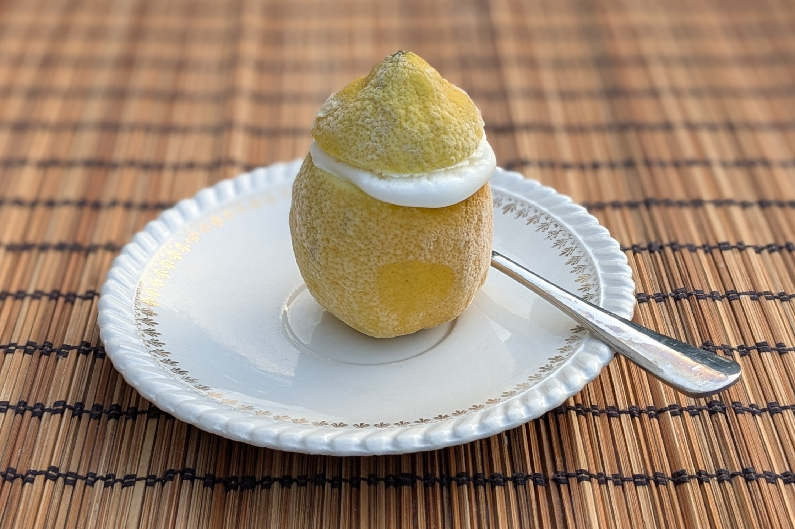

Citrons givrés

Pour 6 citrons givrés et un peu de glace en plus :
- 6 citrons
- 200g de sucre en poudre
- 2 blancs d'œufs
- Découper un chapeau dans la partie supérieure des citrons, couper légèrement leur base pour qu'ils puissent tenir debout, et les évider à la cuillère. Mettre les citrons vides et leurs chapeaux au congélateur.
- Mixer la pulpe des citrons, et passer le tout à la passoire pour récupérer le maximum de jus.
- Dans une casserole, porter 20cl d'eau avec le sucre à ébullition, pendant deux bonnes minutes. Laisser refroidir le sirop obtenu, puis le mélanger au jus de citron et mettre le tout une nuit au frigo.
- Monter les blancs d'œufs en neige ferme dans un saladier, et incorporer à la préparation précédente.
- Verser le tout dans la sorbetière pour un cycle d'une demi-heure, puis remplir les citrons et les mettre au congélateur au moins 4h, pour que ça durcisse bien.
Remarque : si on dispose de citrons vides, il y a de quoi remplir une petite dizaine de citrons givrés en tout avec ces proportions.